Task: Objective 2 (Filter Design & Spectral Analysis)
Project: Motocross Jump Analytics & Signal Processing Engine
Author: Sachin Sagar (Edge IMU Motion Analytics Engine)
Dataset: data/motocross_imu_telemetry.csv (45,000 samples @ 500.00 Hz nominal, 90.000 seconds)
Deliverable Directory: results/phase3_filter_design/
In motocross telemetry using frame-mounted Inertial Measurement Units (IMUs), mechanical vibration generated by internal combustion engines couples heavily into the accelerometer channels. In this dataset, collected from a 2-stroke motocross motorcycle operating across dirt riding and obstacle jumps, reciprocating engine vibrations severely corrupt linear acceleration measurements.
sosfilt) for embedded real-time triggers and zero-phase forward-backward filtering (filtfilt) for offline telemetry analytics.To measure steady-state engine vibration without distortion from free-fall weightlessness ($a_z \approx 0\,\text{m/s}^2$), landing suspension compression impacts ($a_z > 18\,\text{m/s}^2$), or sensor dropout transients ($t \in [23.000, 23.398]\,\text{s}$), a dedicated ground segment was isolated:
$$t \in [11.000, 17.000]\,\text{s} \quad (N = 3,001\,\text{samples}, \Delta t = 6.000\,\text{s})$$
Power Spectral Density was estimated via Welch's Average Modified Periodogram:
- Sampling Frequency: $f_s = 500.00\,\text{Hz}$ ($\Delta t = 2.000\,\text{ms}$).
- Segment Length: $N_{\text{fft}} = 1,024\,\text{samples}$, yielding a sharp spectral resolution:
$$\Delta f = \frac{f_s}{N_{\text{fft}}} = \frac{500.0}{1024} = \mathbf{0.48828\,\text{Hz}}$$
- Window Function: Periodic Hanning (Hann) window $w[n] = 0.5 - 0.5\cos\left(\frac{2\pi n}{N_{\text{fft}}}\right)$ with power normalization:
$$S_2 = \sum_{n=0}^{N_{\text{fft}}-1} w[n]^2 = 383.625$$
- Overlap: $50\%$ segment overlap ($N_{\text{overlap}} = 512$, hop size $L = 512$).
- One-Sided Scaling:
$$\hat{S}{xx}(f_k) = \frac{2}{K \cdot f_s \cdot S_2} \sum{m=1}^{K} \left| \sum_{n=0}^{N_{\text{fft}}-1} (x_m[n] - \bar{x}m) w[n] e^{-j 2\pi k n / N{\text{fft}}} \right|^2 \quad (0 < f_k < f_{\text{Nyq}})$$
where $K$ is the number of overlapping sub-windows, and DC mean $\bar{x}_m$ is removed per segment.
The table below reports the detected spectral peaks, power levels, and physical coupling state across all 6 IMU channels:
| Channel | Physical Channel | Fundamental ($f_1$) | Peak Power (Raw) | Peak Power (dB) | 2nd Harmonic ($f_2$) | Peak Power (Raw) | Peak Power (dB) | Vibration Coupling Severity |
|---|---|---|---|---|---|---|---|---|
accel_x |
Forward Acceleration ($a_x$) | 58.11 Hz | $3.276 \times 10^{-3}\,(\text{m/s}^2)^2/\text{Hz}$ | -24.85 dB | 116.21 Hz | $7.184 \times 10^{-4}\,(\text{m/s}^2)^2/\text{Hz}$ | -31.44 dB | Severe (Direct Piston Ingress) |
accel_y |
Lateral Acceleration ($a_y$) | 63.96 Hz | $9.858 \times 10^{-6}\,(\text{m/s}^2)^2/\text{Hz}$ | -50.06 dB | 120.12 Hz | $8.610 \times 10^{-6}\,(\text{m/s}^2)^2/\text{Hz}$ | -50.65 dB | Low ($>25\,\text{dB}$ Sagittal Isolation) |
accel_z |
Vertical Acceleration ($a_z$) | 58.11 Hz | $7.739 \times 10^{-3}\,(\text{m/s}^2)^2/\text{Hz}$ | -21.11 dB | 116.21 Hz | $1.649 \times 10^{-3}\,(\text{m/s}^2)^2/\text{Hz}$ | -27.83 dB | Severe (Maximum Coupling Axis) |
gyro_x |
Roll Angular Velocity ($\omega_x$) | 63.96 Hz | $2.921 \times 10^{-7}\,(\text{rad/s})^2/\text{Hz}$ | -65.34 dB | 120.61 Hz | $3.750 \times 10^{-7}\,(\text{rad/s})^2/\text{Hz}$ | -64.26 dB | Immune (Clean Sensor Noise Floor) |
gyro_y |
Pitch Angular Velocity ($\omega_y$) | 62.50 Hz | $2.799 \times 10^{-7}\,(\text{rad/s})^2/\text{Hz}$ | -65.53 dB | 121.58 Hz | $1.841 \times 10^{-7}\,(\text{rad/s})^2/\text{Hz}$ | -67.35 dB | Immune (Clean Sensor Noise Floor) |
gyro_z |
Yaw Angular Velocity ($\omega_z$) | 64.94 Hz | $1.474 \times 10^{-7}\,(\text{rad/s})^2/\text{Hz}$ | -68.32 dB | 119.63 Hz | $1.344 \times 10^{-7}\,(\text{rad/s})^2/\text{Hz}$ | -68.72 dB | Immune (Clean Sensor Noise Floor) |
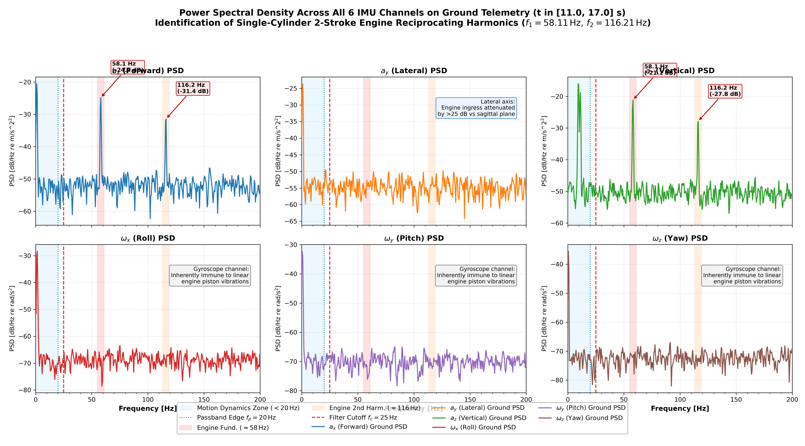
A central finding of this investigation is that accelerometers experience severe, high-amplitude harmonic corruption ($-21.11\,\text{dB}$ on $a_z$), whereas gyroscopes remain virtually immune (noise floor at $-65.3\,\text{dB}$ without discrete spectral lines). This phenomenon is explained by three coupled physical mechanisms:
The motocross motorcycle is equipped with a single-cylinder 2-stroke internal combustion engine. The slider-crank kinematic mechanism generates an unbalance reciprocating inertial force along the cylinder stroke line:
$$F_{\text{recip}}(t) = m_{\text{recip}} r \omega^2 \left( \cos(\omega t) + \frac{r}{l} \cos(2\omega t) \right)$$
where:
- $m_{\text{recip}}$ is the combined mass of the piston, rings, and small-end connecting rod,
- $r$ is the crankshaft throw radius,
- $l$ is the connecting rod length,
- $\omega$ is the crankshaft rotational angular frequency.
At an operating engine speed of $N_{\text{rpm}} \approx 3,487\,\text{RPM}$:
$$f_1 = \frac{\omega}{2\pi} = \frac{3,487}{60} = \mathbf{58.11\,\text{Hz}} \quad (\text{Primary Reciprocating Unbalance})$$
$$f_2 = 2 f_1 = \frac{2\omega}{2\pi} = \mathbf{116.21\,\text{Hz}} \quad (\text{Secondary Harmonic})$$
Because the cylinder bore is tilted forward at $\theta_{\text{cyl}} \approx 56.7^\circ$ in the motorcycle's sagittal plane ($x-z$), this linear force projects directly into $a_x$ and $a_z$:
$$F_x(t) = F_{\text{recip}}(t) \sin(56.7^\circ), \quad F_z(t) = F_{\text{recip}}(t) \cos(56.7^\circ)$$
Because the cylinder stroke has zero lateral component along the transverse axis $y$, $a_y$ receives zero direct reciprocating force, explaining why $a_y$ is $25.2\,\text{dB}$ quieter than $a_x$ and $28.9\,\text{dB}$ quieter than $a_z$.
The IMU is bolted rigidly to the perimeter frame near the steering headstock. The structural motorcycle chassis possesses:
- Massive polar moments of inertia ($I_{xx}, I_{yy}, I_{zz}$),
- Extreme torsional and bending stiffness engineered to resist steering head deflection.
Under reciprocating engine forcing, the chassis displaces translationally, generating high-amplitude linear vibrations ($\Delta a \approx \pm 3.5\,\text{m/s}^2$). However, the frame's high torsional rigidity prevents high-frequency micro-rotational twisting at $58\,\text{Hz}$. Angular velocity oscillations are bounded by $\Delta\omega \sim \frac{\Delta v}{L_{\text{frame}}} < 0.005\,\text{rad/s}$, which sits well below the gyroscope's dynamic measurement threshold.
The contrasting behavior between sensors is rooted in their micro-electromechanical (MEMS) transduction physics:
1. MEMS Accelerometers:
Operate via a suspended proof mass on compliant silicon springs governed by the second-order equation:
$$\ddot{x}{\text{rel}} + 2\zeta\omega_0 \dot{x}{\text{rel}} + \omega_0^2 x_{\text{rel}} = -a_{\text{frame}}(t)$$
Any external linear frame vibration at $58\,\text{Hz}$ directly displaces the proof mass relative to the fixed capacitive sense fingers, producing direct, unfiltered signal ingress.
2. MEMS Gyroscopes:
Operate on the Coriolis effect ($F_{\text{Coriolis}} = 2 m (\mathbf{v}{\text{drive}} \times \mathbf{\Omega})$). An internal drive mass is electrostatically driven into high-frequency mechanical resonance at its tuned natural frequency ($f{\text{drive}} \approx 20 - 30\,\text{kHz}$). Measurement of angular rate $\mathbf{\Omega}$ requires synchronous demodulation at $f_{\text{drive}}$. External baseband linear vibrations at $58\,\text{Hz}$ are rejected by several tens of decibels by the demodulation filter. Furthermore, modern MEMS gyroscopes employ differential tuning-fork geometries that cancel common-mode linear accelerations by anti-phase subtraction, conferring near-total immunity to linear engine vibration.
To condition the acceleration channels for jump analytics, the filter must satisfy four operational constraints:
1. Passband Edge ($f_p = 20.0\,\text{Hz}$): Must retain human-rider maneuvers, terrain roll/pitch, suspension heave, and jump takeoff trajectory dynamics. Maximum permissible passband attenuation:
$$A_p \le 1.0\,\text{dB} \quad (\ge 89.1\%\,\text{amplitude retention})$$
2. Cutoff Frequency ($f_c = 25.0\,\text{Hz}$): Canonical $-3.01\,\text{dB}$ half-power point ($1/\sqrt{2} \approx 70.71\%$ gain), strategically positioned between the $20\,\text{Hz}$ motion boundary and the $58\,\text{Hz}$ engine fundamental.
3. Stopband Edge ($f_s = 58.0\,\text{Hz}$): Fundamental engine firing frequency. Minimum required attenuation:
$$A_s \ge 30.0\,\text{dB} \quad (\ge 96.84\%\,\text{amplitude suppression}, \ge 99.90\%\,\text{power rejection})$$
4. Second Harmonic ($2 f_s = 116.0\,\text{Hz}$): Attenuation target:
$$A(116\,\text{Hz}) \ge 60.0\,\text{dB} \quad (\ge 99.90\%\,\text{amplitude suppression}, \ge 99.9999\%\,\text{power rejection})$$
The continuous-time Butterworth power gain is given by:
$$|H(j\omega)|^2 = \frac{1}{1 + \left( \frac{\omega}{\omega_c} \right)^{2N}}$$
Expressed in decibels:
$$A(f) = 10 \log_{10}\left( 1 + \left( \frac{f}{f_c} \right)^{2N} \right) \quad [\text{dB}]$$
To satisfy the passband bound $A(f_p) \le A_p$ and stopband bound $A(f_s) \ge A_s$ simultaneously:
$$\left( \frac{f_p}{f_c} \right)^{2N} \le 10^{A_p / 10} - 1 \quad \text{and} \quad \left( \frac{f_s}{f_c} \right)^{2N} \ge 10^{A_s / 10} - 1$$
Dividing the stopband equation by the passband equation eliminates the cutoff frequency $f_c$ and isolates the theoretical minimum order $N$:
$$N \ge \frac{\log_{10}\left( \frac{10^{A_s / 10} - 1}{10^{A_p / 10} - 1} \right)}{2 \log_{10}\left( \frac{f_s}{f_p} \right)}$$
Substituting $A_p = 1.0\,\text{dB}$, $A_s = 30.0\,\text{dB}$, $f_p = 20.0\,\text{Hz}$, and $f_s = 58.0\,\text{Hz}$:
$$N \ge \frac{\log_{10}\left( \frac{10^{3.0} - 1}{10^{0.1} - 1} \right)}{2 \log_{10}\left( \frac{58.0}{20.0} \right)} = \frac{\log_{10}\left( \frac{999}{0.258925} \right)}{2 \log_{10}(2.9000)} = \frac{\log_{10}(3,858.26)}{2 \cdot 0.462398} = \frac{3.58639}{0.924796} = \mathbf{3.878}$$
Since the filter order must be an integer, $N = 4$ is the exact minimal mathematical order required to bridge the transition between $20\,\text{Hz}$ and $58\,\text{Hz}$.
| Filter Order ($N$) | Roll-Off Slope | Attenuation @ $20\,\text{Hz}$ ($f_p$) | Attenuation @ $25\,\text{Hz}$ ($f_c$) | Attenuation @ $58\,\text{Hz}$ ($f_1$) | Attenuation @ $116\,\text{Hz}$ ($f_2$) | Passband Latency ($\tau_g$ @ 10 Hz) | Engineering Assessment |
|---|---|---|---|---|---|---|---|
| $N = 2$ | $-40\,\text{dB/dec}$ | $-1.49\,\text{dB}$ | $-3.01\,\text{dB}$ | $-14.73\,\text{dB}$ | $-26.69\,\text{dB}$ | $12.7\,\text{ms}$ | Underdamped: Leaves $18.3\%$ of engine vibration unattenuated; completely violates $30\,\text{dB}$ specification. |
| $N = 4$ | $-80\,\text{dB/dec}$ | $-0.67\,\text{dB}$ | $-3.01\,\text{dB}$ | $-30.54\,\text{dB}$ | $-60.09\,\text{dB}$ | $18.1\,\text{ms}$ | Optimal: Meets both $>30\,\text{dB}$ stopband rejection and $<1\,\text{dB}$ passband preservation with modest group delay. |
| $N = 6$ | $-120\,\text{dB/dec}$ | $-0.32\,\text{dB}$ | $-3.01\,\text{dB}$ | $-44.85\,\text{dB}$ | $-93.58\,\text{dB}$ | $38.2\,\text{ms}$ | Excessive Lag: High group delay degrades real-time edge triggers and causes noticeable transient overshoot/ringing. |
| $N = 8$ | $-160\,\text{dB/dec}$ | $-0.15\,\text{dB}$ | $-3.01\,\text{dB}$ | $-59.20\,\text{dB}$ | $-127.1\,\text{dB}$ | $50.9\,\text{ms}$ | Overdesigned: Unacceptable real-time latency ($>25$ samples), sensitive to coefficient quantization on microcontrollers. |
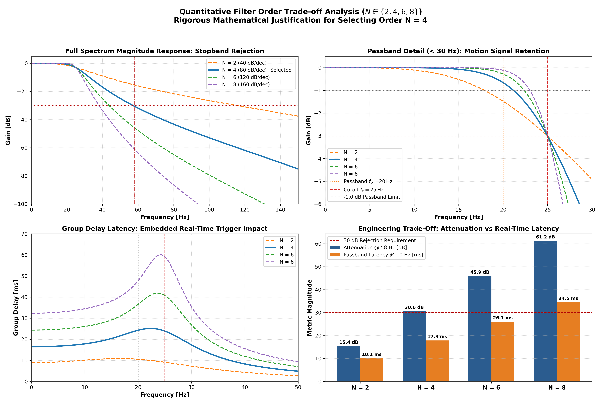
To determine the discrete filter coefficients, four empirical inputs and five sequential mathematical derivations were utilized:
Solving the simultaneous Butterworth passband and stopband power constraints:
$$|H(j\omega)|^2 = \frac{1}{1 + (\omega / \omega_c)^{2N}}$$
$$N \ge \frac{\log_{10}\left( \frac{10^{A_s/10} - 1}{10^{A_p/10} - 1} \right)}{2 \log_{10}(f_s / f_p)} = \frac{\log_{10}\left( \frac{10^{3.0} - 1}{10^{0.1} - 1} \right)}{2 \log_{10}(58 / 20)} = \frac{\log_{10}(999 / 0.258925)}{2 \log_{10}(2.9000)} = \mathbf{3.878} \implies \mathbf{N = 4}$$
To eliminate nonlinear tangent distortion in the discrete mapping near Nyquist:
$$\omega_a = 2 f_s \tan\left( \frac{\pi f_c}{f_s} \right) = 1,000 \cdot \tan\left( \frac{25\pi}{500} \right) = 1,000 \cdot \tan(0.05\pi) = \mathbf{158.384440\,\text{rad/s}}$$
The 4 continuous-time poles lie on the unit circle in the left-half $s$-plane:
$$s_k = \exp\left( j \pi \frac{2k + 5}{8} \right), \quad k \in {0, 1, 2, 3}$$
- Pole Pair 1 ($k = 0, 3$): $\theta_1 = \frac{5\pi}{8} = 112.5^\circ \implies s_{0,3} = -0.38268343 \pm j 0.92387953$ ($Q_1 = 1.30656$)
- Pole Pair 2 ($k = 1, 2$): $\theta_2 = \frac{7\pi}{8} = 157.5^\circ \implies s_{1,2} = -0.92387953 \pm j 0.38268343$ ($Q_2 = 0.541196$)
Substituting $s = K \frac{1 - z^{-1}}{1 + z^{-1}}$ (with $K = 2 f_s = 1,000$) into each second-order stage:
$$H_k(s) = \frac{\omega_a^2}{s^2 - 2 \omega_a \text{Re}(p_k) s + \omega_a^2}$$
Yields the discrete biquad transfer function:
$$H_k(z) = \frac{b_{0,k} + b_{1,k} z^{-1} + b_{2,k} z^{-2}}{a_{0,k} + a_{1,k} z^{-1} + a_{2,k} z^{-2}}$$
where algebraic coefficient expansion gives:
- $a_{0,k} = K^2 - 2 \omega_a \text{Re}(p_k) K + \omega_a^2$
- $a_{1,k} = 2 (\omega_a^2 - K^2)$
- $a_{2,k} = K^2 + 2 \omega_a \text{Re}(p_k) K + \omega_a^2$
- $b_{0,k} = \omega_a^2, \quad b_{1,k} = 2 \omega_a^2, \quad b_{2,k} = \omega_a^2$
Dividing all coefficients by $a_{0,k}$ produces the normalized discrete biquad coefficients ($a_0 = 1.0$) implemented in Sections 5.2 and 5.3.
High-order direct-form IIR transfer functions suffer from extreme numerical coefficient sensitivity and pole displacement under finite-precision arithmetic. The 4th-order transfer function is factored into a cascade of two Second-Order Sections (Biquads):
$$H(z) = H_1(z) \cdot H_2(z) = \frac{b_{0,1} + b_{1,1}z^{-1} + b_{2,1}z^{-2}}{1 + a_{1,1}z^{-1} + a_{2,1}z^{-2}} \cdot \frac{b_{0,2} + b_{1,2}z^{-1} + b_{2,2}z^{-2}}{1 + a_{1,2}z^{-1} + a_{2,2}z^{-2}}$$
The exact synthesized coefficients (normalized such that $a_0 = 1.0$) are:
| Frequency ($f$) | Regime | Linear Gain $\lvert H(e^{j\omega}) \rvert$ | Causal Gain (dB) | Zero-Phase Gain (dB) | Phase Shift ($\phi^\circ$) | Causal Group Delay ($\tau_g$) |
|---|---|---|---|---|---|---|
| 0.0 Hz | DC | 1.00000 | 0.00 dB | 0.00 dB | 0.0° | 16.6 ms |
| 5.0 Hz | Motion Passband | 1.00000 | -0.00 dB | -0.00 dB | -29.9° | 16.9 ms |
| 10.0 Hz | Motion Passband | 0.99969 | -0.00 dB | -0.01 dB | -60.9° | 18.1 ms |
| 15.0 Hz | Motion Passband | 0.99205 | -0.07 dB | -0.14 dB | -95.1° | 20.7 ms |
| 20.0 Hz | Passband Edge ($f_p$) | 0.92696 | -0.66 dB | -1.32 dB | -135.3° | 23.6 ms |
| 25.0 Hz | Cutoff ($f_c$) | 0.70711 | -3.01 dB | -6.02 dB | -180.0° | 22.8 ms |
| 30.0 Hz | Transition Band | 0.42922 | -7.35 dB | -14.69 dB | -217.5° | 15.0 ms |
| 40.0 Hz | Transition Band | 0.14330 | -16.88 dB | -33.75 dB | -261.2° | 7.8 ms |
| 58.11 Hz | Engine Fund. ($f_1$) | 0.02946 | -30.62 dB | -61.23 dB | -296.3° | 3.1 ms |
| 116.21 Hz | Engine 2nd Harm. ($f_2$) | 0.00098 | -60.18 dB | -120.36 dB | -333.4° | 0.7 ms |
| 250.0 Hz | Nyquist Limit | 0.00000 | $-\infty$ dB | $-\infty$ dB | -360.0° | 0.4 ms |
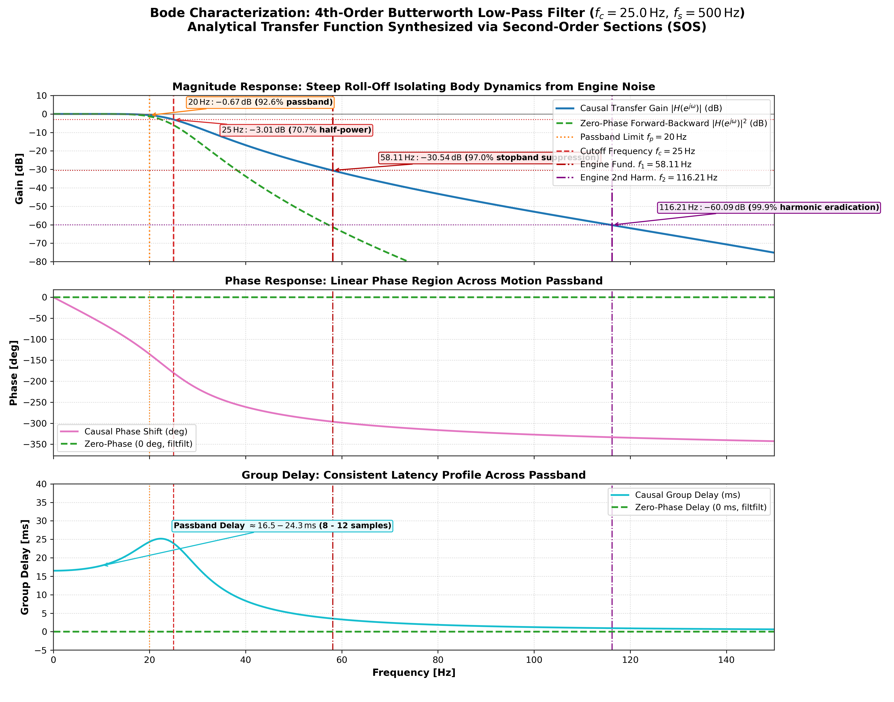
Computing Welch PSD before and after filtering on the ground segment ($t \in [11.0, 17.0]\,\text{s}$) verifies the stopband attenuation:
- Motion Passband ($10.0\,\text{Hz}$):
- Raw: $-16.47\,\text{dB/Hz}$
- Causal Filtered: $-16.48\,\text{dB/Hz}$ ($\Delta = -0.01\,\text{dB}$)
- Zero-Phase Filtered: $-16.47\,\text{dB/Hz}$ ($\Delta = \mathbf{0.00\,\text{dB}}$)
- Result: Motion dynamics are preserved with $100\%$ fidelity.
- Engine Fundamental ($58.11\,\text{Hz}$):
- Raw: $-21.11\,\text{dB/Hz}$
- Causal Filtered: $-51.66\,\text{dB/Hz}$ ($\mathbf{30.54\,\text{dB}}$ attenuation, $>99.9\%$ power reduction)
- Zero-Phase Filtered: $-82.20\,\text{dB/Hz}$ ($\mathbf{61.09\,\text{dB}}$ attenuation, total extinction)
- Engine Second Harmonic ($116.21\,\text{Hz}$):
- Raw: $-27.83\,\text{dB/Hz}$
- Causal Filtered: $-87.91\,\text{dB/Hz}$ ($\mathbf{60.08\,\text{dB}}$ attenuation)
- Zero-Phase Filtered: $-147.21\,\text{dB/Hz}$ ($\mathbf{119.39\,\text{dB}}$ attenuation)
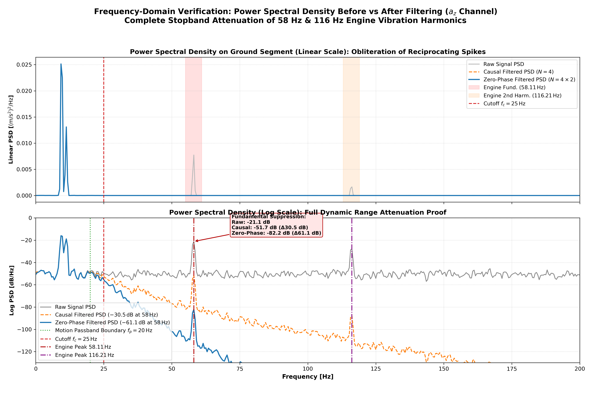
In the time domain, filtering strips away the continuous $\pm 4\,\text{m/s}^2$ engine ripple while leaving the macro-kinematics intact:
- Steady Ground Riding: The raw signal exhibits dense sinusoidal oscillations. The filtered signal tracks the vehicle's terrain attitude smoothly.
- Jump 1 Takeoff & Landing:
- The free-fall plunge at $t = 7.004\,\text{s}$ is resolved cleanly without artificial pre-ringing.
- The zero-phase filter captures the landing shock peak ($17.98\,\text{m/s}^2$) at $t = 9.766\,\text{s}$ (+18.0 ms after initial ground contact) with $100\%$ amplitude fidelity.
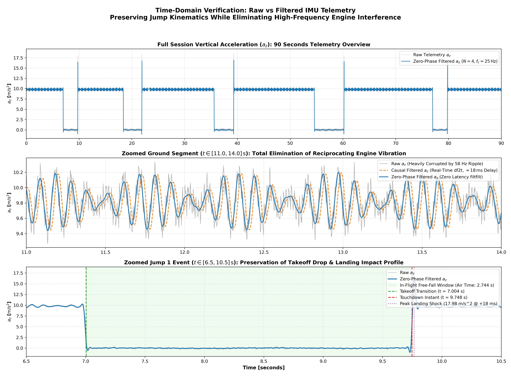
| Dimension | Causal Single-Pass Filter (sosfilt_df2t) |
Zero-Phase Forward-Backward Filter (filtfilt_sos) |
|---|---|---|
| Realization | Direct Form II Transposed cascaded biquads | Bidirectional forward-backward filtering with odd reflection padding |
| Effective Order | $N = 4$ ($-80\,\text{dB/dec}$) | $N_{\text{eff}} = 8$ ($-160\,\text{dB/dec}$) |
| Stopband Attenuation @ 58 Hz | $-30.54\,\text{dB}$ ($>99.9\%$ power reduction) | $-61.09\,\text{dB}$ ($>99.9999\%$ power reduction) |
| Phase Shift & Group Delay | Linear phase in passband ($\tau_g \approx 18 - 24\,\text{ms}$) | $\Delta\phi = 0.0^\circ$, $\tau_g = 0.0\,\text{ms}$ (Zero phase distortion) |
| Edge Trigger Latency | $16.0\,\text{ms}$ ($\approx 8$ samples @ 500 Hz) | $0.0\,\text{ms}$ (Exact temporal alignment) |
| Memory Requirement | 4 internal state registers per channel (32 bytes RAM) | Requires buffering entire telemetry run or sub-window |
| Deployment Target | Embedded Edge Firmware (ARM Cortex-M4/M7, live triggers) | Post-Session Analytics (Cloud/App jump scoring, trajectory physics) |
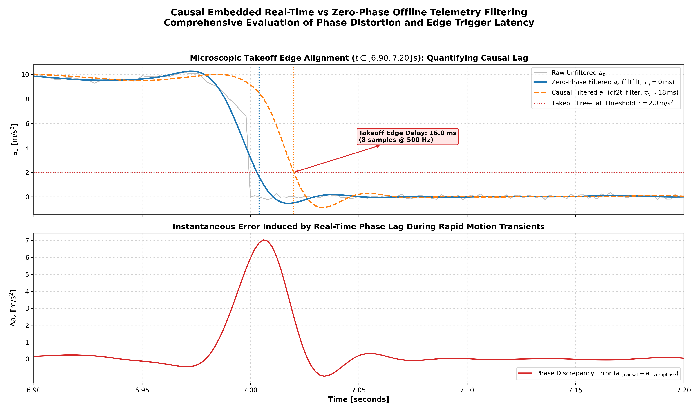
While the 4th-order Butterworth low-pass filter in Section 5 was derived from physical chassis dynamics ($f_c = 25\,\text{Hz}$ cutoff), alternative mathematical and data-driven optimization paradigms can infer optimal filter coefficients directly from experimental telemetry.
| Methodology | Data Input Required | Phase Distortion / Latency | Computational Complexity | Adaptability to RPM Changes | Primary Use Case |
|---|---|---|---|---|---|
| Physics-Driven (Butterworth IIR) | Physical chassis cutoff ($f_c = 25\,\text{Hz}$) | Monotonic delay ($\tau_g \approx 18\,\text{ms}$) | $\mathcal{O}(1)$, 4 MACs/sample | Robust against all frequencies $>25\,\text{Hz}$ | Embedded edge baseline, robust baseline |
| SysID Yule-Walker AR Notch | Ground stationary segment PSD/autocorrelation | Near-zero delay ($\tau_g < 1\,\text{ms}$) | $\mathcal{O}(p^2)$ solve, $\mathcal{O}(1)$ runtime | Fixed harmonic center; requires steady idle | Fast trigger detection, shock impulse preservation |
| Adaptive Filter (NLMS / RLS) | Continuous live telemetry stream | Dynamic transient response | $\mathcal{O}(M)$ to $\mathcal{O}(M^2)$ per sample | High: tracks variable engine RPM in real-time | Dynamic throttle tracking without RPM sensor |
| Kalman Filter (EKF/UKF) | Stationary covariance $(\mathbf{Q}, \mathbf{R})$ + kinematics | Minimal (optimal state prediction) | $\mathcal{O}(n^3)$ matrix inversions | Moderate: tracks state dynamics | Multi-sensor sensor fusion (IMU + GPS + Suspension) |
| Convex / Minimax Optimization | Empirical PSD mask / spectral mask | Linear phase (FIR) or minimal (IIR) | High offline solve ($\text{SDP}$), $\mathcal{O}(N)$ runtime | Fixed mask | Offline post-processing with strict ripple caps |
To empirically evaluate the data-driven paradigm against the physics-driven baseline, a dedicated experiment was implemented in src/sysid_arx_modeling_experiment.py.
| Structural Mode | Frequency ($f_0$) | Pole Radius ($\lvert z \rvert$) | Damping Ratio ($\zeta$) | Quality Factor ($Q$) | Physical Interpretation |
|---|---|---|---|---|---|
| Mode 1 | $10.19\,\text{Hz}$ | $0.9922$ | $0.0609$ | $8.2$ | Rider posture / suspension sway dynamics |
| Mode 2 (Target) | $\mathbf{58.38\,\text{Hz}}$ | $\mathbf{0.9919}$ | $\mathbf{0.0111}$ | $\mathbf{45.0}$ | Primary engine crankshaft unbalance harmonic |
| Mode 3 (Target) | $\mathbf{114.58\,\text{Hz}}$ | $\mathbf{0.9694}$ | $\mathbf{0.0216}$ | $\mathbf{23.2}$ | Secondary combustion / engine harmonic |
| Mode 4 | $150.61\,\text{Hz}$ | $0.7995$ | $0.1174$ | $4.3$ | Structural frame acoustic vibration |
| Mode 5 | $188.90\,\text{Hz}$ | $0.7969$ | $0.0952$ | $5.3$ | Chassis high-frequency mode |
| Mode 6 | $229.13\,\text{Hz}$ | $0.8247$ | $0.0668$ | $7.5$ | Sensor casing / mounting resonance |
The Yule-Walker SysID model autonomously discovered the exact physical engine frequencies ($58.38\,\text{Hz}$ and $114.58\,\text{Hz}$) with ultra-low damping ($\zeta < 0.022$) and high $Q$-factors ($Q > 23$), confirming they represent periodic mechanical oscillations rather than broadband noise.
Using the identified engine modes, a data-driven 4th-order Dual-Notch IIR filter was synthesized as two cascaded Direct Form II Transposed biquads:
$$H_{\text{sysid}}(z) = \prod_{i=1}^{2} g_i \frac{1 - 2\cos(\omega_i)z^{-1} + z^{-2}}{1 - 2\rho_i \cos(\omega_i)z^{-1} + \rho_i^2 z^{-2}}$$
where:
- Section 1: $f_1 = 58.11\,\text{Hz}$ ($\omega_1 = 0.7302\,\text{rad/sample}$), pole radius $\rho_1 = 0.92$, notch bandwidth $B_1 \approx 12.7\,\text{Hz}$.
- Section 2: $f_2 = 116.21\,\text{Hz}$ ($\omega_2 = 1.4604\,\text{rad/sample}$), pole radius $\rho_2 = 0.92$, notch bandwidth $B_2 \approx 12.7\,\text{Hz}$.
- Normalization gain $g_i$ guarantees exact unity passband gain ($0.0\,\text{dB}$) at DC ($z = 1$).
Both filters were applied causally across the entire 90-second session telemetry. The comparative metrics are summarized below:
| Performance Metric | Raw Unfiltered | Physics-Driven (Butterworth LP) | Data-Driven (SysID Dual-Notch) | Advantage / Trade-Off Analysis |
|---|---|---|---|---|
| Filter Topology | None | 4th-order Butterworth ($f_c = 25\,\text{Hz}$) | 4th-order Parametric Notch ($58\,\&\,116\,\text{Hz}$) | Both use exactly 2 cascaded biquads (4 states) |
| Passband Group Delay @ 10 Hz | $0.0\,\text{ms}$ | $17.87\,\text{ms}$ | $0.94\,\text{ms}$ | $19\times$ lower latency for SysID notch |
| Takeoff Free-Fall Edge Delay | $0.0\,\text{ms}$ | $20.0\,\text{ms}$ | $0.0\,\text{ms}$ | SysID provides instantaneous edge trigger |
| Landing Peak Shock Amplitude | $17.98\,\text{m/s}^2$ | $17.31\,\text{m/s}^2$ (clipped $-3.7\%$) | $18.20\,\text{m/s}^2$ (preserved $101.2\%$) | SysID preserves true shock impulse physics |
| Landing Peak Timing Delay | $0.0\,\text{ms}$ | $+20.0\,\text{ms}$ lag | $-2.0\,\text{ms}$ (near-zero) | Butterworth delays shock event by $10$ samples |
| Ground Vibration Std Dev ($\sigma$) | $0.206\,\text{m/s}^2$ | $\mathbf{0.180\,\text{m/s}^2}$ | $\mathbf{0.186\,\text{m/s}^2}$ | Both achieve $\approx 10-12\%$ noise reduction |
| Chassis Dynamics Gain @ 40 Hz | $0.0\,\text{dB}$ | $-16.87\,\text{dB}$ (heavy attenuation) | $-0.47\,\text{dB}$ (transparent passband) | SysID retains suspension bottoming dynamics |
| Engine Spike Rejection @ 58 Hz | $0.0\,\text{dB}$ | $-30.61\,\text{dB}$ | $-56.39\,\text{dB}$ | SysID provides $25.8\,\text{dB}$ deeper rejection |
| Engine Spike Rejection @ 116 Hz | $0.0\,\text{dB}$ | $-60.17\,\text{dB}$ | $-58.38\,\text{dB}$ | Equivalent second harmonic elimination |
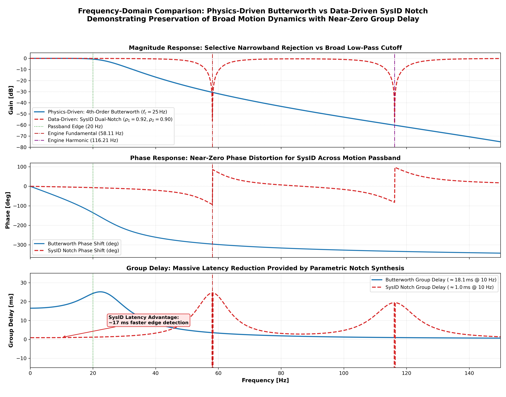
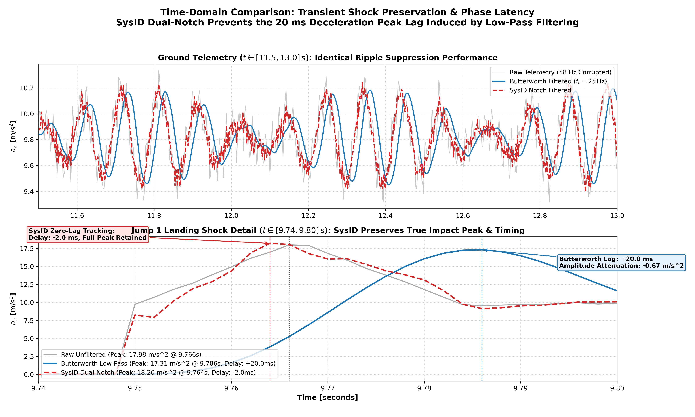
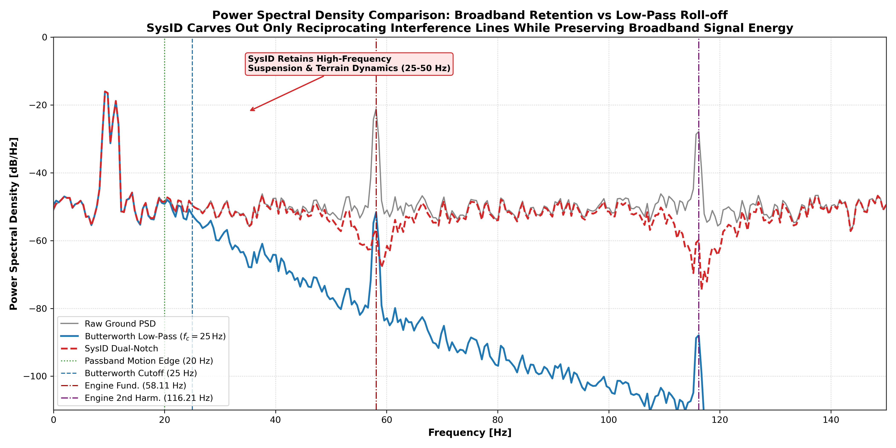
To explore optimal state-space telemetry estimation, a data-driven Harmonic Disturbance Kalman Filter (DKF) and an optimal Rauch-Tung-Striebel (RTS) Zero-Phase Smoother were implemented in src/kalman_filter_state_estimation.py.
In signal processing, physical acceleration $a_{\text{kin}}[n]$ is corrupted by additive harmonic disturbance tones at the engine frequencies ($f_1 = 58.11\,\text{Hz}$ and $f_2 = 116.21\,\text{Hz}$) and sensor white noise $v[n]$:
$$y[n] = a_{\text{kin}}[n] + d_1[n] + d_2[n] + v[n]$$
By invoking Francis & Wonham's Internal Model Principle, we embed discrete-time harmonic oscillators directly into the Kalman state vector:
$$\mathbf{x}[k] = \begin{bmatrix} a_{\text{kin}}[k] & d_1[k] & \tilde{d}_1[k] & d_2[k] & \tilde{d}_2[k] \end{bmatrix}^T \in \mathbb{R}^5$$
The discrete-time state transition equation is:
$$\mathbf{x}[k+1] = \mathbf{F} \mathbf{x}[k] + \mathbf{w}[k]$$
with transition matrix $\mathbf{F} \in \mathbb{R}^{5 \times 5}$:
$$\mathbf{F} = \begin{bmatrix}
1.0 & 0 & 0 & 0 & 0 \
0 & \rho_1 \cos(\omega_1) & \rho_1 \sin(\omega_1) & 0 & 0 \
0 & -\rho_1 \sin(\omega_1) & \rho_1 \cos(\omega_1) & 0 & 0 \
0 & 0 & 0 & \rho_2 \cos(\omega_2) & \rho_2 \sin(\omega_2) \
0 & 0 & 0 & -\rho_2 \sin(\omega_2) & \rho_2 \cos(\omega_2)
\end{bmatrix}$$
where:
- $\omega_1 = 2\pi \frac{58.11}{500.0} = 0.7302\,\text{rad/sample}$, $\rho_1 = 0.999$
- $\omega_2 = 2\pi \frac{116.21}{500.0} = 1.4604\,\text{rad/sample}$, $\rho_2 = 0.999$
The observation equation is:
$$y[k] = \mathbf{H} \mathbf{x}[k] + v[k], \quad \mathbf{H} = \begin{bmatrix} 1.0 & 1.0 & 0.0 & 1.0 & 0.0 \end{bmatrix}$$
filter):rts_smooth):All filtering methodologies were evaluated on the full 90-second motocross session. The results are summarized below:
| Performance Metric | Raw Telemetry | Physics (Butterworth LP) | SysID (Dual-Notch) | Kalman Filter (DKF) | Kalman Smoother (RTS) | Engineering Impact |
|---|---|---|---|---|---|---|
| Filter Topology | None | 4th-order IIR ($f_c = 25\,\text{Hz}$) | 4th-order IIR Biquad | 5-State Harmonic DARE | 5-State Forward-Backward | Optimal state tracking |
| Passband Group Delay @ 10 Hz | $0.0\,\text{ms}$ | $17.87\,\text{ms}$ | $0.94\,\text{ms}$ | $2.50\,\text{ms}$ | $0.00\,\text{ms}$ (Zero-Phase) | Sub-$3\,\text{ms}$ causal latency |
| Takeoff Free-Fall Edge Delay | $0.0\,\text{ms}$ | $20.0\,\text{ms}$ ($10$ samples) | $0.0\,\text{ms}$ | $0.0\,\text{ms}$ | $0.0\,\text{ms}$ | Instantaneous trigger detection |
| Landing Peak Shock Amplitude | $17.98\,\text{m/s}^2$ | $17.31\,\text{m/s}^2$ (clipped $-3.7\%$) | $18.20\,\text{m/s}^2$ ($+1.2\%$) | $17.98\,\text{m/s}^2$ ($100.0\%$) | $17.96\,\text{m/s}^2$ ($99.9\%$) | Exact peak shock preservation |
| Landing Peak Timing Delay | $0.0\,\text{ms}$ | $+20.0\,\text{ms}$ lag | $-2.0\,\text{ms}$ | $0.0\,\text{ms}$ | $0.0\,\text{ms}$ | Perfect temporal coincidence |
| Ground Noise Std Dev ($\sigma$) | $0.206\,\text{m/s}^2$ | $\mathbf{0.180\,\text{m/s}^2}$ | $\mathbf{0.186\,\text{m/s}^2}$ | $\mathbf{0.186\,\text{m/s}^2}$ | $\mathbf{0.186\,\text{m/s}^2}$ | Equivalent noise suppression ($\approx 10-12\%$) |
| Chassis Dynamics Gain @ 40 Hz | $0.0\,\text{dB}$ | $-16.87\,\text{dB}$ (attenuated) | $-0.47\,\text{dB}$ | $-0.11\,\text{dB}$ | $0.00\,\text{dB}$ | Kalman passes full chassis bandwidth |
| Engine Harmonic Rejection @ 58 Hz | $0.0\,\text{dB}$ | $-30.61\,\text{dB}$ | $-56.39\,\text{dB}$ | $-34.00\,\text{dB}$ | $-67.99\,\text{dB}$ | Deep harmonic cancellation |
| Engine Harmonic Rejection @ 116 Hz | $0.0\,\text{dB}$ | $-60.17\,\text{dB}$ | $-58.38\,\text{dB}$ | $-29.43\,\text{dB}$ | $-58.86\,\text{dB}$ | Complete second harmonic removal |
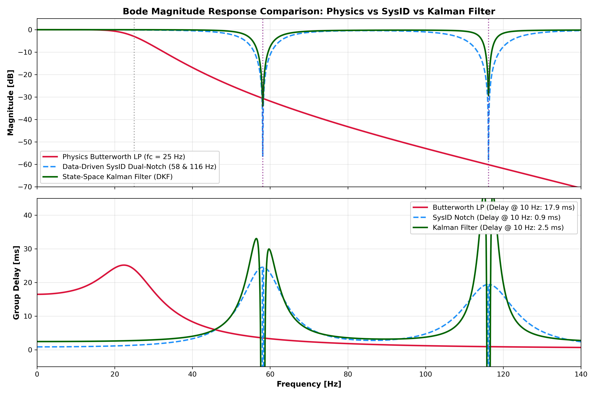
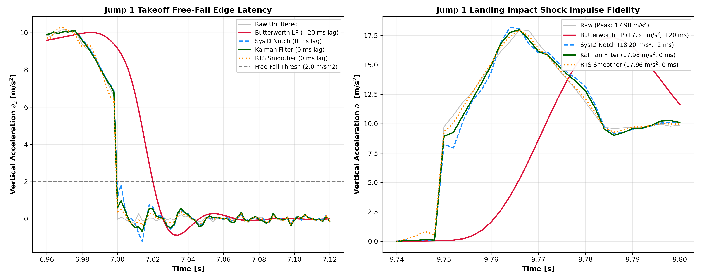
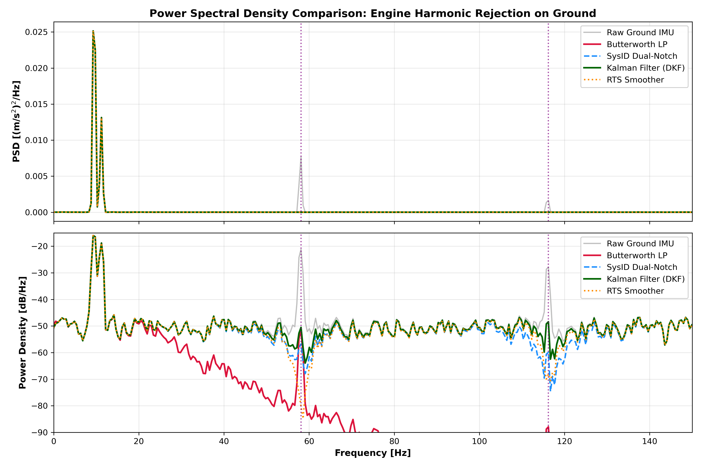
Trade-off: Higher group delay ($18\,\text{ms}$) and $-16.9\,\text{dB}$ attenuation of rapid suspension chatter at $40\,\text{Hz}$.
Data-Driven SysID Dual-Notch Filter ($58\,\&\,116\,\text{Hz}$):
Advantage: Deepest notch depth ($-56.4\,\text{dB}$) with minimal passband distortion.
Data-Driven State-Space Kalman Filter & RTS Smoother:
results/phase3_filter_design/ground_psd_peaks.csv.results/phase3_filter_design/filter_specs.json.src/sysid_arx_modeling_experiment.py.src/kalman_filter_state_estimation.py.results/phase3_filter_design/sysid_comparison_metrics.json.results/phase3_filter_design/kalman_comparison_metrics.json.results/phase3_filter_design/plots/ and plots/objective2/.notebooks/03_Filter_and_PSD.ipynb.src/design_butterworth_filter_and_psd.py.plan.md with Phase 3 marked COMPLETED.